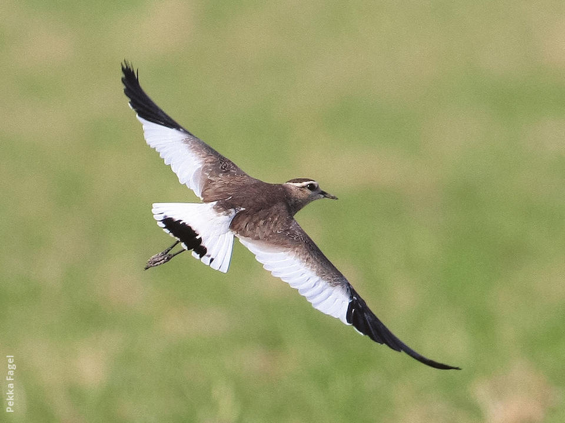
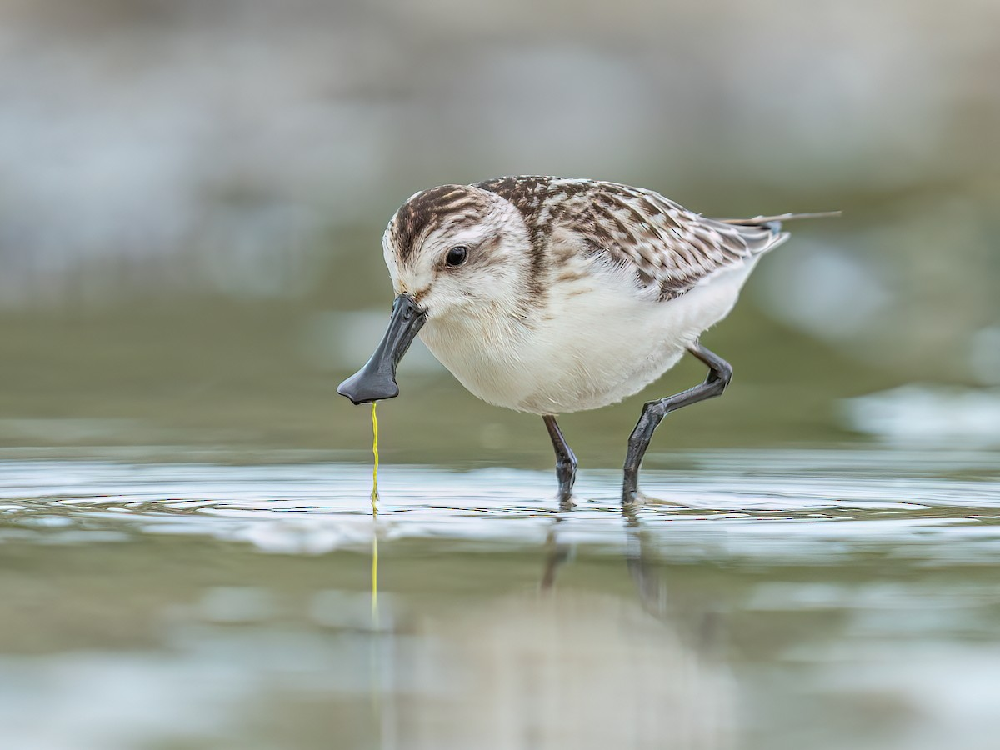
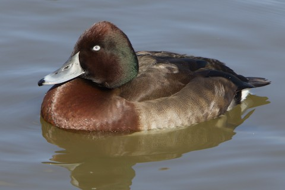
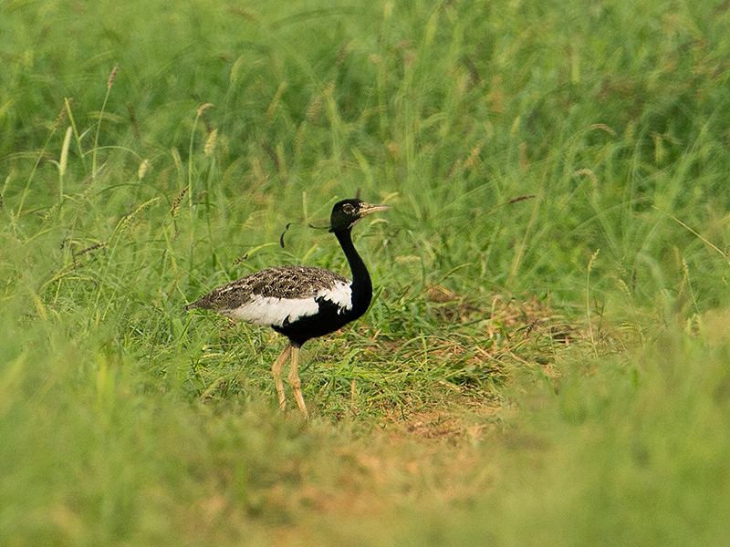
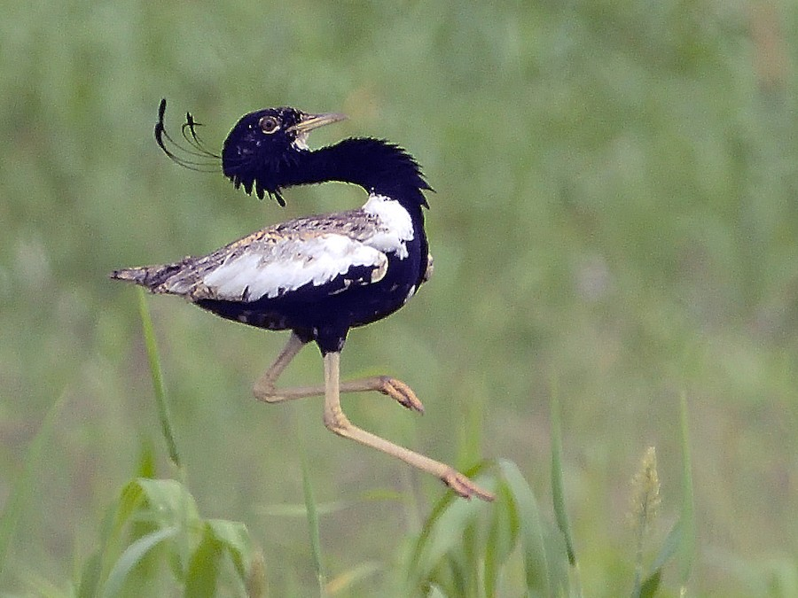
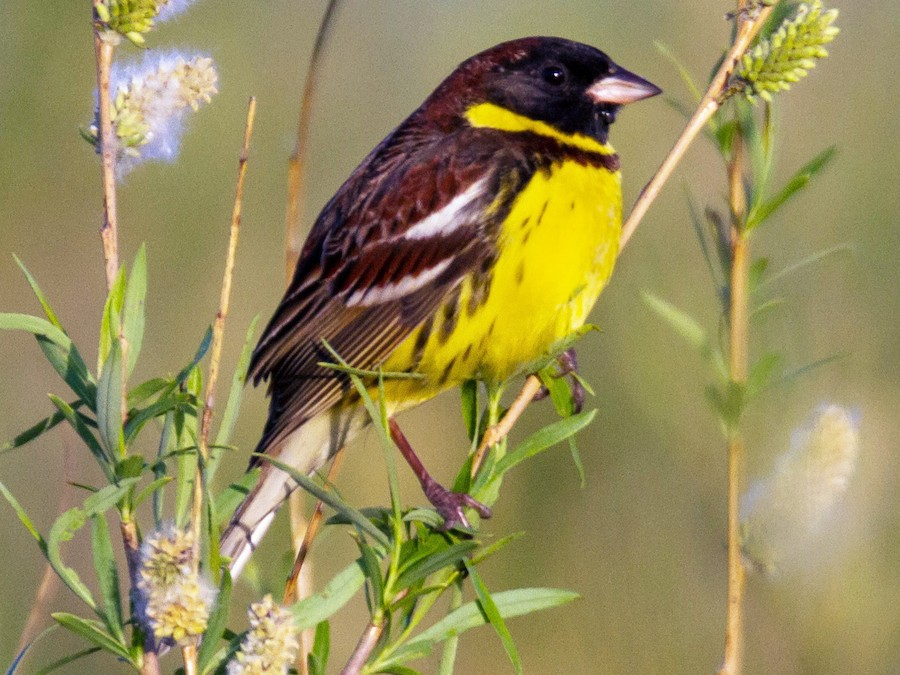
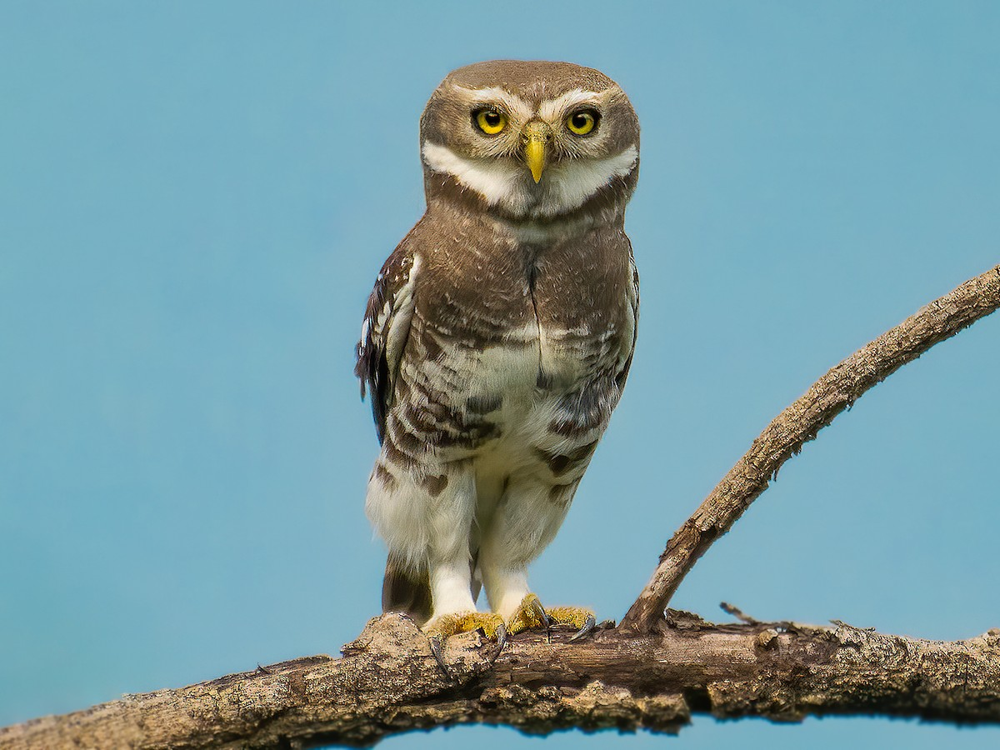

8 Endangered Birds to Watch For This Winter - Gallery
The Great Indian Bustard: One of the heaviest flying birds in the world, this massive grassland bird is easily recognized by its tall, ostrich-like stance, brownish body, and black cap. Winter is an excellent time to spot them moving across the dry, semi-arid plains. Less than 150 individuals are estimated to remain due to habitat loss and collisions with power lines.

The Sociable Lapwing: A striking migratory wader that breeds in Kazakhstan and travels south to India for the winter. It has a distinctive dark eye stripe, a sand-brown upper body, and a black crown. They are often spotted feeding on insects in plowed fields alongside more common lapwings.

The Spoon-Billed Sandpiper: An incredibly rare, tiny shorebird that breeds in northeastern Russia and migrates thousands of miles to winter on India's coastlines. Its most defining feature is its highly specialized spade-shaped or spoon-like bill, which it sweeps side-to-side through shallow water to catch small invertebrates.

The Baer's Pochard: This diving duck breeds in eastern Russia and China before heading south. The males display a glossy, dark green head, striking white eyes, and rich chestnut-brown flanks that stand out clearly when swimming among other migratory waterfowl.

The Bengal Florican: A secretive, medium-sized bustard that relies heavily on undisturbed, tall alluvial grasslands. While the winter months are quieter than their dramatic spring breeding season, the shorter, managed grass in protected parks makes spotting these highly elusive birds slightly easier for patient observers.

The Lesser Florican: The smallest of the bustard family in India, known for the male's distinct black-and-white plumage and long, curled head ribbons. While they are famous for their vertical jumping courtship displays during the monsoon, they disperse into semi-arid grasslands and open cultivated fields during the winter, where they require sharp eyes to pick out from the brush.

The Yellow-Breasted Bunting: This small, vibrant passerine (perching bird) features a bright yellow underside and a dark brown back. Once incredibly common across Eurasia, its population crashed drastically due to illegal trapping along its migration route, making winter sightings in India rare and ecologically significant.

The Forest Owlet: Unlike most owls, the Forest Owlet is diurnal (active during the day), often hunting from bare branches in the morning and late afternoon sun. It has an unspotted crown, a prominent white facial mask, and a thick, dark band across its throat. Winter offers excellent visibility in these forests as the trees begin to shed their leaves.